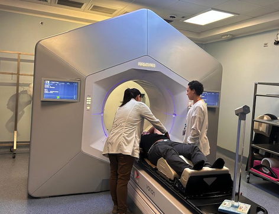
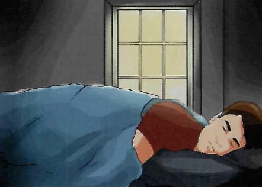

El principal objetivo de esta información es que usted y su familia conozcan en qué consiste el tratamiento de radioterapia en cáncer gástrico.
• Cada paciente reacciona de manera diferente a la radioterapia
• La intensidad de los efectos dependen de la dosis, la zona irradiada y del estado general de salud
• Estas recomendaciones buscan mejorar su calidad de vida
• Recuerde una vez iniciado su tratamiento, sacar cita de control en el edificio nuevo de radioterapia

CONCEPTOS BÁSICOS
¿Qué es la radioterapia?
Es una forma de tratamiento en el que se utiliza radiaciones ionizantes con el fin de destruir o disminuir las células tumorales, esto depende del estado de la enfermedad y de reacción del organismo.
Se aplica irradiando directamente la zona donde estaba el tumor y en los ganglios que estén afectados.
Duración del tratamiento:
10 a 15 minutos por sesión, donde necesitamos su completa colaboración no movilizándose.
Las marcas en su piel:
Las marcas que le coloquen debe cuidarlas, estos son una guía de la zona que le deben irradiar.
EFECTOS SECUNDARIOS
Posibles efectos secundarios:
Vómitos y náuseas
Retortijones o diarrea
Falta de apetito o sensación de llenura después de ingerir pequeñas cantidades de alimentos
Pérdida de peso
Sugerencia:
El paciente debe comer cada vez que sienta apetito y tratar de consumir pequeñas cantidades de alimentos altos en calorías como pudines, batidos, cereales, platos a base de queso y suplementos alimenticios. Importante consultar con la nutricionista.
Recomendaciones si se presentan náuseas y vómito:
Esto puede darse desde el inicio del tratamiento. Usted debe reportar la cantidad y frecuencia con que los presenta. No debe consumir alimentos condimentados, picantes, muy grasosos, alcohol, evitar refrescos gaseosos y comidas fritas. Se recomienda una comida ligera antes del tratamiento.
La irradiación del abdomen superior produce estimulación sostenida de los receptores del tracto gastrointestinal. Este proceso conduce al desarrollo de falta de apetito o sensación de llenura después de ingerir pequeñas cantidades de alimentos.
RECOMENDACIONES
Recomendaciones generales:
Coma porciones pequeñas y frecuentes
Mastique bien y coma despacio
Evite lácteos enteros y productos ácidos
Planifique tiempo para descansar
Haga ejercicio moderado
Métodos para controlar la diarrea:
Aumente los líquidos (agua, té ligero, jugo de manzana, néctar de melocotón, caldos y gelatina)
Evite alimentos ricos en fibra o que puedan causar gases
No tome leche ni coma productos lácteos
Cuando mejore, coma alimentos bajos en fibra y ricos en potasio
Manejo de la fatiga:
La fatiga es un efecto secundario común que puede variar de leve a extrema. Puede manifestarse como debilidad, falta de energía, pesadez o lentitud.
Intente dormir al menos 8 horas cada noche
Manténgase activo durante el día, si su condición lo permite
Tome siestas cortas de 10 a 15 minutos si es necesario
Priorice las actividades más importantes
Consulte con su médico o nutricionista para un plan personalizado.
La fatiga puede suceder debido a varias razones: Ansiedad, Depresión, Estrés, Infecciones, Anemia, Inactividad.
La fatiga también puede deberse al esfuerzo de ir a las sesiones de radioterapia todos los días. La mayoría del tiempo no sabrá por qué se siente fatigado.

INFORMACIÓN ADICIONAL
Planear la alimentación es parte importante de la radioterapia dirigida al área del estómago y el abdomen. Mientras tanto, ingiera alimentos de alto valor nutricional en varias porciones pequeñas para que reciba suficientes proteínas, calorías, vitaminas y minerales.
Medicamentos:
El médico puede indicar antieméticos como:
Gravol
Metocloropramida
Si estos no son efectivos, reportelo al médico, ya que él puede indicarle algún otro medicamento.